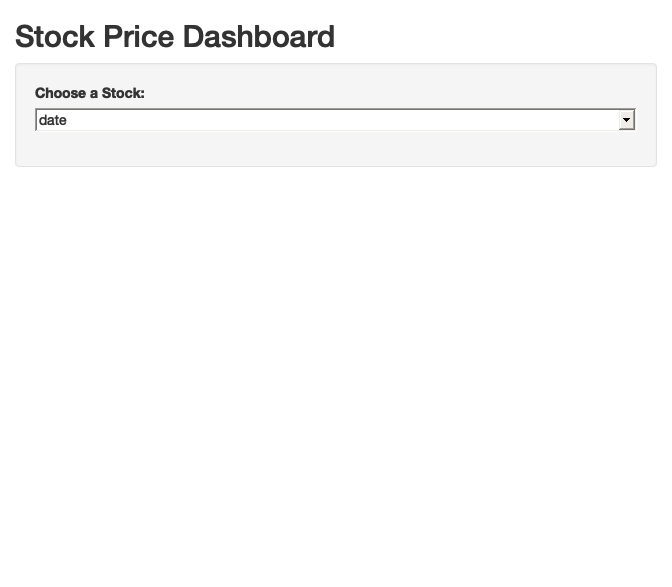
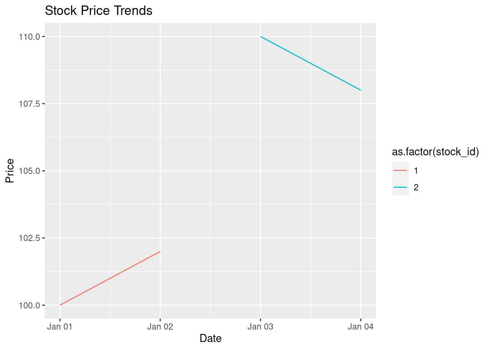

```{r}
# Install and load the dplyr package
library(dplyr)
# Example: Simple data frame manipulation
data <- data.frame(
stock_id = c(1, 2, 3, 4),
stock_price = c(100, 150, 120, 130)
)
data <- data %>%
mutate(price_change = stock_price - lag(stock_price))
```3 Toolkit
Financial data analytics involves the application of statistical and machine learning techniques to financial data, aiming to extract insights, make predictions, and guide decision-making under uncertainty. This chapter introduces a set of tools and processes that are grounded in professional standards in statistics and data science. Specifically, the chapter focuses on both digital and cognitive tools which help to tackle the challenges of replication in financial research in the professional world
3.1 Introduction to R
R, with its exceptional array of packages and community support, stands at the forefront of financial data analytics. This language isn’t just about executing tasks; it’s about opening doors to a more profound understanding of financial markets and trends through data.
Why Choose R for Advanced Financial Analytics?
- Comprehensive Statistical Analysis: R is renowned for its extensive capabilities in statistical analysis. This depth enables a nuanced understanding and interpretation of financial data, going beyond mere model execution.
- Efficient Data Handling: Given the complexity and volume of financial data, efficient management tools are crucial. R facilitates this with robust features for data manipulation and transformation, allowing for a focus on insights rather than data wrangling.
- Advanced Graphical Capabilities: Visual representations are key in finance. R’s sophisticated graphical features allow for the creation of insightful visualizations, making complex data stories comprehensible and engaging.
- Accessibility and Industry Relevance: R’s open-source nature ensures it is freely accessible, encouraging ongoing use and exploration. It is highly respected in the finance industry, especially in data-intensive roles, unlike licensed software like Stata, which, while valued in academia, is less prevalent in the financial services sector.
- Flexibility for Modern Analytics: R bridges the traditional econometric methods of licensed software (like Stata or Matlab) with modern Bayesian and machine learning approaches. This adaptability makes it ideal for a contemporary financial analytics curriculum.
- Cloud-Based Advantages: R’s compatibility with cloud-based platforms enhances its utility. This allows for scalable data analysis, remote collaboration, and easy sharing of resources and results. Cloud integration also means R can handle larger datasets more efficiently, a critical aspect in financial data analytics where data volume and complexity are constantly growing. This cloud compatibility aligns well with the evolving landscape of financial technology and data science.
3.1.1 R Code Example: Basic Data Manipulation
3.2 Embracing the Future with Q-RaP
Q-RaP1 is not just a platform; it’s a commitment to the future of financial data analytics. Hosted on Posit Cloud, this cloud-based architecture is our bridge to advanced, accessible analytics.
Posit Cloud: A New Era of Data Science
With Posit Cloud, the complexities of setting up a data science environment are things of the past. It’s a playground for financial data scientists, offering tools and resources that are pivotal for modern financial analysis.
Teaching data science using Q-RaP involves a focus on innovative pedagogy in statistics and data science, emphasizing computing, reproducible research, student-centered learning, and open-source education. This approach is particularly beneficial in financial data analytics, where cloud-based solutions offer scalable, efficient, and collaborative environments for both teaching and practical application.
Q-RaP also facilitates a transition to cloud-based data science, addressing common challenges and offering best practices for migrating data science infrastructure to the cloud. The benefits of working in such an environment include secure data storage and access, scalable analysis capabilities, and efficient sharing of results.
For more detailed information and resources, you can explore the Posit website and community pages. Also, you can access Posit Cloud for your institution through the provided link: SSO for Posit Cloud.
3.2.1 Q-RaP Student Experience
3.3 Data Collection
- Reading Data: Importing a CSV file containing daily asset pricing global factors.
To download the daily frequency World factors from the JKP Factors website, you need to follow these steps:
- Visit JKP Factors.
- Select the desired options for your data download, such as the region/country (e.g., World), theme/factor, data frequency (daily), and weighting method.
- Click the ‘Download’ button to download the data in CSV format.
Once you have downloaded the CSV file, you can load it into R using the following R code:
data <- read.csv("path_to_your_downloaded_file.csv")Replace "path_to_your_downloaded_file.csv" with the actual path to the CSV file you downloaded. This will load the data into a dataframe in R for further analysis.
- APIs and Databases: Connecting to a financial API to fetch real-time stock data. (Note: This is a hypothetical example, as the actual connection will depend on the specific API’s requirements.)
```{r}
# Assuming a package like quantmod is installed
library(quantmod)
library(tidyverse)
library(timetk)
library(janitor)
symbol <- "AAPL"
start_date <- as.Date("2020-01-01")
end_date <- Sys.Date()
# Get stock data
getSymbols(symbol, src = "yahoo", from = start_date, to = end_date)
aapl_xts <- AAPL['2020-01-01/']
aapl_df <- fortify.zoo(aapl_xts)
```[1] "AAPL"3.4 Data Processing for Financial Data Analytics
Data cleaning, the process of detecting and correcting (or removing) corrupt or inaccurate records from a dataset, is a critical step in financial data analytics. Financial datasets often contain inconsistencies, missing values, or outliers that can significantly affect analyses. This section provides practical approaches to cleaning financial data using R.
3.4.1 Handling Missing Data
Missing data can skew analyses and lead to inaccurate conclusions. Use the is.na() function to identify missing data.
R Example:
```{R}
#| eval: false
# Assuming 'financial_data' is a DataFrame
missing_data <- is.na(financial_data)
```3.4.2 Handling Missing Data
Options include imputation or removal of missing data points.
3.4.2.1 Imputation Example:
```{R}
#| eval: false
# Replacing missing values with the mean
financial_data$column[is.na(financial_data$column)] <- mean(financial_data$column, na.rm = TRUE)
```3.4.2.2 Removal Example:
```{R}
#| eval: false
# Removing rows with missing values
clean_data <- na.omit(financial_data)
```3.4.3 Detecting and Removing Outliers
Outliers can distort statistical analyses and models. A common method is to use Z-scores or interquartile range (IQR).
3.4.3.1 Z-score Example:
```{R}
#| eval: false
z_scores <- scale(financial_data$column)
outliers <- which(abs(z_scores) > 3)
```3.4.3.2 IQR Example:
```{R}
#| eval: false
IQR_values <- IQR(financial_data$column)
Q1 <- quantile(financial_data$column, 0.25)
Q3 <- quantile(financial_data$column, 0.75)
outliers <- which(financial_data$column < Q1 - 1.5 * IQR_values | financial_data$column > Q3 + 1.5 * IQR_values)
```3.4.4 Removing Outliers
Outliers can be removed based on the identified indices.
```{R}
#| eval: false
financial_data <- financial_data[-outliers, ]
```3.4.5 Normalizing and Scaling Data
Normalization ensures that different scales do not distort analyses, especially important in financial datasets with diverse units and scales.
3.4.6 Min-Max Normalization
Rescales the feature to a fixed range [0, 1].
```{R}
#| eval: false
min_max_normalize <- function(x) {
(x - min(x)) / (max(x) - min(x))
}
financial_data$normalized_column <- min_max_normalize(financial_data$column)
```3.4.7 Standardization (Z-score Normalization)
Rescales data to have a mean of 0 and a standard deviation of 1.
```{R}
#| eval: false
financial_data$standardized_column <- scale(financial_data$column)
```3.4.8 Converting Data Types
Financial datasets often require converting data types, such as transforming strings to dates or categorical variables to numeric.
3.4.9 Converting Strings to Dates
Use the as.Date() or lubridate package for complex date formats.
```{R}
#| eval: false
financial_data$date_column <- as.Date(financial_data$date_column, format="%Y-%m-%d")
# Or using lubridate for more complex formats
library(lubridate)
financial_data$date_column <- ymd(financial_data$date_column)
```3.4.10 Converting Factors to Numeric
Transform categorical variables into numeric format.
```{R}
#| eval: false
financial_data$factor_column <- as.numeric(as.factor(financial_data$factor_column))
```Effective data cleaning is essential for accurate financial data analysis. These methods in R provide a foundation for preparing financial datasets for analysis.
Theoretical Importance of Statistical Reasoning in Handling Missing and Outlying Data
Statistical reasoning plays a pivotal role in addressing missing and outlying variables in financial datasets. The nature of missing data can significantly influence the approach for handling it. Understanding the mechanism behind missing data is crucial: data can be ‘Missing Completely at Random’ (MCAR), where the likelihood of missingness is unrelated to the data itself; ‘Missing at Random’ (MAR), where missingness is related to observed data but not the missing data; and ‘Missing Not at Random’ (MNAR), where missingness is related to the unobserved data. Each category requires different techniques and assumptions for valid analysis. For instance, MCAR allows for simple imputation methods without biasing the results, whereas MAR and MNAR often require more sophisticated approaches, such as multiple imputation or model-based methods, to avoid skewed conclusions.
Similarly, the treatment of outliers requires careful statistical consideration. Outliers can either represent genuine anomalies or data entry errors, and distinguishing between these is vital for accurate analysis. In financial data, genuine outliers could indicate significant market events worth investigating, while erroneous outliers need to be corrected or removed to prevent distortion in statistical inference.
In essence, statistical reasoning ensures that the handling of missing and outlying data is not just a mechanical task, but a thoughtful process that considers the underlying data generation process. This approach is crucial in financial data analytics, where the accuracy and reliability of the analysis can have significant implications.
3.5 Data Transformations in Financial Analytics
Data transformations play a crucial role in preparing raw financial data for analysis, modeling, visualization, and presentation purposes. By applying different techniques, analysts can manipulate datasets to derive meaningful insights more effectively. This section introduces essential data transformations frequently employed in financial analytics using R.
3.5.1 Scaling Numerical Variables
Scaling numerical variables involves normalizing the range of variables to facilitate comparisons across disparate measures. Two widely used scaling methods include standardization and normalization. Standardization converts variables to zero-centered distributions with unit variance, whereas normalization scales features between defined intervals (e.g., 0 to 1). Implement scaling using functions found in the scale() and tsfe::rescale() functions, both part of the built-in base package.
Example:
```{R}
set.seed(42)
x <- rnorm(100, mean = 10, sd = 2)
std_x <- scale(x)
```3.5.2 Logarithmic Transformation
Applying logarithmic transformations helps mitigate skewness issues prevalent in certain types of financial data (i.e., exponential growth patterns). Commonly applied logarithms (with a natural base e or base 10) can stabilize variances and linearize relationships among variables. Utilize the log() function to implement logarithmic transformations.
Example:
```{R}
set.seed(42)
y <- exp((rnorm(100, mean = 1, sd = 1)))
log_y <- log(y + 1) # Adding a constant prevents taking logs of negative numbers
```3.5.3 Differencing Time Series Data
Differencing is a technique often applied to stationarize nonstationary time series data. Stationarity implies consistent statistical properties throughout the entire dataset—namely, constant means, variances, and autocorrelations. Subtract consecutive observations to compute returns, thereby reducing potential trends or seasonality present in the original data. Leverage the lag() and diff() functions to execute differencing.
Example:
```{R}
set.seed(42)
closing_prices <- cumprod(rnorm(100, mean = 0.01, sd = 0.01))
returns <- diff(closing_prices) / lag(closing_prices)
```3.5.4 Binning Continuous Variables
Binning continuous variables categorizes quantitative values into distinct intervals or bins, allowing discretization for easier interpretation and visualizations. Various binning strategies exist, including equal width, equal frequency, and clustering algorithms. Employ the cut() and findInterval() functions to implement basic forms of binning.
Example:
```{R}
set.seed(42)
age <- runif(1000, min = 0, max = 100)
age_binned <- cut(age, breaks = seq(0, 100, by = 10), labels = FALSE)
```3.5.5 Merging Multiple Datasets
Merging multiple datasets enables integration of complementary pieces of information scattered across various sources. Combining databases requires matching keys shared among records of interest. Apply the merge() function to merge datasets horizontally, while vertical merges require appending rows from one database onto another via concatenation (cbind() or rbind()) or stacking (rbindlist() from the data.table package).
Example:
```{R}
set.seed(42)
dataset1 <- data.frame(id = sample(1:5, size = 5, replace = TRUE), x = runif(5))
dataset2 <- data.frame(id = sample(1:5, size = 5, replace = TRUE), y = runif(5))
merged_dataset <- merge(dataset1, dataset2, by = "id")
stacked_dataset <- data.frame(bind_rows(list(dataset1, dataset2)))
```These examples demonstrate fundamental data transformations commonly encountered during financial analytics projects using R. Familiarity with these concepts equips practitioners to wrangle complex datasets efficiently, ultimately leading to improved analytical outcomes.
3.6 Changing the Shape of DataFrames: Long to Wide Using R
When working with financial data, sometimes it becomes necessary to change the shape of a dataset from long to wide. For instance, say you want to convert daily stock data into monthly aggregates while retaining information about multiple features (columns) in the initial dataset. To accomplish this task, you can rely on various tools available in R, particularly the tidyr package. Below, we outline an example utilizing the tidyr package alongside tidyquant and janitor for cleaning and preprocessing data.
First, ensure you have installed and loaded the necessary packages:
```{r}
library(tidyquant)
library(tidyr)
library(janitor)
```Next, retrieve the historical stock data using the tidyquant API:
```{r}
tickers <- c("AAPL", "MSFT")
start_date <- as.Date("2020-01-01")
end_date <- Sys.Date()
financial_data <- tq_get(tickers, from = start_date, to = end_date)
```Initially, our dataset has a long structure with one observation per day and separate columns for ticker symbols:
```{r}
print(head(financial_data))
```# A tibble: 6 × 8
symbol date open high low close volume adjusted
<chr> <date> <dbl> <dbl> <dbl> <dbl> <dbl> <dbl>
1 AAPL 2020-01-02 74.1 75.2 73.8 75.1 135480400 73.2
2 AAPL 2020-01-03 74.3 75.1 74.1 74.4 146322800 72.4
3 AAPL 2020-01-06 73.4 75.0 73.2 74.9 118387200 73.0
4 AAPL 2020-01-07 75.0 75.2 74.4 74.6 108872000 72.7
5 AAPL 2020-01-08 74.3 76.1 74.3 75.8 132079200 73.8
6 AAPL 2020-01-09 76.8 77.6 76.6 77.4 170108400 75.4To convert the data to a wide structure where each feature (column) represents a unique combination of ticker symbol and indicator name, employ the pivot_wider() function:
```{R}
financial_data_wide <- financial_data |>
mutate(date = ymd(date)) |>
select(date,symbol,adjusted) |>
pivot_wider(names_from =symbol, values_from = adjusted) |>
clean_names() |>
remove_empty(which = "rows") |>
relocate(date, .before = everything())
print(head(financial_data_wide))
```# A tibble: 6 × 3
date aapl msft
<date> <dbl> <dbl>
1 2020-01-02 73.2 155.
2 2020-01-03 72.4 153.
3 2020-01-06 73.0 153.
4 2020-01-07 72.7 152.
5 2020-01-08 73.8 154.
6 2020-01-09 75.4 156.By doing so, you create a new dataset with a single line per reporting period and individual columns representing specific combinations of tickers and indicators. Additionally, notice the usage of helper functions from the janitor package to improve readability further.
3.7 Reporting and Communication
Quarto: Creating a dynamic report with Quarto is beyond the scope of this platform, but typically involves creating a
.qmdfile with embedded R code and narrative.Interactive Dashboards: Building a simple Shiny dashboard to display stock data.
```{r}
# Simple Shiny dashboard
library(shiny)
# UI layout
ui <- fluidPage(
titlePanel("Stock Price Dashboard"),
sidebarLayout(
sidebarPanel(
selectInput("stock", "Choose a Stock:",
choices = colnames(financial_data_wide))
),
mainPanel(
plotOutput("stockPlot")
)
)
)
# Server logic
server <- function(input, output) {
output$stockPlot <- renderPlot({
plot(financial_data_wide[[input$stock]], type = 'l',
main = paste("Stock", input$stock))
})
}
# Run the app
shinyApp(ui = ui, server = server)
```
These examples demonstrate a basic workflow in R for financial data analysis, from data collection to interactive reporting. Remember, for complex financial analyses, more sophisticated techniques and careful consideration of financial theories and market behaviors are necessary.
TL;DR
Programming in R within the Posit IDE provides a robust framework for financial data science. The combination of R’s statistical capabilities and Posit’s integrated environment enables efficient data analysis and insightful reporting in the financial domain.
This chapter provides a foundational overview of using R for financial data science in the Posit IDE. The code examples are basic and intended to illustrate the concepts discussed. Depending on the audience’s proficiency and the book’s scope, you may include more complex examples and in-depth explanations of financial modeling and data analysis techniques.
3.8 Replicabation and reoduciblity in Financial data analytics
3.8.1 Replication
Replicability refers to the ability to duplicate the results of a study by using the same methodology but with different data sets. In other words, if other researchers follow the same procedures and methods but use new data, they should arrive at similar findings or conclusions. In financial data analytics this is particularly important because financial models and algorithms should be robust and consistent across different data sets. For instance, a risk assessment model should yield reliable and consistent risk evaluations across various market conditions or customer profiles.
3.8.2 Reproducibility
Reproducibility, on the other hand, refers to the ability to recreate the results of a study by using the same methodology and the same data. It’s about the precision in the replication of the original study’s setup, including the data and the computational procedures. In these fields of economics and finance, reproducibility ensures that if another researcher or practitioner uses the same data and follows the same steps, they would arrive at the same results. This is crucial for validating the findings of financial models, statistical analyses, or data-driven research.
3.8.2.1 Nuances and Differences
Data Used: The key difference lies in the data used. Replicability involves different datasets, whereas reproducibility uses the original dataset.
Purpose:
- Replicability tests the generalizability and robustness of the findings or models across different scenarios or datasets.
- Reproducibility ensures the accuracy and reliability of the specific findings reported, confirming that the results are not due to errors or anomalies in the original research.
Challenges:
- In replicability, the challenge is often in finding or generating new datasets that are sufficiently similar to test the methods or models.
- In reproducibility, challenges often involve access to the exact data and a clear understanding of the original methodology, including computational tools and settings.
In Practice:
- In finance and data science, replicability is crucial for models and analyses to be considered robust and reliable over time and across different market conditions or data environments.
- Reproducibility is essential for the credibility of research findings, ensuring that results are not artifacts of data peculiarities or methodological errors.
Understanding these nuances is particularly important in your field, as both replicability and reproducibility are foundational to the integrity and reliability of research in finance, technology, and data science.
3.8.3 Why should we care
Verification of Results: Replicability allows other researchers to verify the findings of a study, ensuring that the results are robust and not just a product of specific data sets or methodologies.
Scientific Integrity: It upholds the scientific integrity of finance research. If a study’s results can be replicated consistently, it builds trust in the findings and in the field as a whole.
Learning and Improvement: It facilitates learning and methodological improvements in the field. By replicating studies, researchers can understand the nuances of different methodologies and data sets, leading to better and more effective research methods.
Policy Implications: Given that finance research often informs policy decisions, replicability ensures that policies are based on reliable and verifiable findings.
Transparency: It promotes transparency in research. When authors make their data and methods available for replication, it encourages openness and honesty in the research process.
Replication and reproduction are th cornerstone of scientific research (Vilhuber 2021), ensuring that results can be independently verified and trusted. In Financial data analytics, reproducibility is critical for validating results and maintaining integrity in analysis and decision-making processes. Reproducibility in data science means that others can use the same data and methods to achieve the same results. It involves a combination of well-documented code, data, and methodologies.
3.8.4 Achieving Reproducibility
Achieving reproducibility requires careful planning and execution throughout the data analysis process.
3.8.4.1 Data Management
- Accessible Data: Ensure data used for analysis is accessible and properly documented.
- Data Versioning: Track changes in data, especially in dynamic datasets.
3.8.4.2 Code Documentation and Management
- Commenting Code: Write clear comments explaining the purpose and functionality of code segments.
- Modular Coding: Break code into reusable functions and modules for better clarity and reusability.
3.8.4.3 R Code Example: Commenting and Modular Coding
```{r}
# Function to calculate the average stock price
calculate_average_price <- function(prices) {
# prices: Vector of stock prices
return(mean(prices, na.rm = TRUE))
}
# Example usage
average_price <- calculate_average_price(data$stock_price)
```Certainly, expanding on the tools for reproducibility in economics, especially considering the role of literate programming:
3.8.5 Tools for Reproducibility
3.8.5.1 1. Quarto (Formerly R Markdown)
- Overview: Quarto, formerly known as R Markdown, is a powerful tool that integrates data analysis with documentation. It allows researchers to combine code, data, and narrative in a single, coherent document.
- Functionality: This tool is particularly useful in literate programming, where the focus is on writing human-readable documents with embedded code. This approach ensures that the narrative explains the data analysis, making the research more transparent and understandable.
- Benefits: Quarto enhances the reproducibility of economic research by ensuring that the analysis can be easily reviewed, understood, and replicated by others. It supports multiple programming languages, including R, Python, and SQL, making it versatile for various types of economic research.
3.8.5.2 2. Version Control (Git/GitHub)
- Overview: Version control systems like Git, often used with platforms like GitHub, are essential for managing changes to research projects, especially code.
- Functionality: These tools allow researchers to track every change made to the codebase, facilitate branching and merging of different code versions, and support collaboration among multiple researchers.
- Collaboration: In economics, where collaborative research is common, Git/GitHub provides a platform for multiple researchers to work on different parts of a project simultaneously without the risk of conflicting changes.
- Reproducibility: By maintaining a history of all changes and allowing for the restoration of previous versions, these tools ensure that every stage of the research can be reviewed and replicated. This is crucial in verifying the robustness of the research findings.
3.8.5.3 3. Literate Programming in Financial Research
- Concept: Literate programming, a concept introduced by Donald Knuth, is about writing computer programs primarily for human beings to read, rather than for computers to execute. In the context of economic research, it involves integrating code with descriptive text and analysis.
- Tools like Quarto: Tools such as Quarto facilitate literate programming by allowing researchers to interleave code with narrative text. This not only makes the research more understandable but also ensures that the code and the context in which it is used are inseparable.
- Impact on Reproducibility: The literate programming approach significantly enhances the reproducibility of economic research. By providing the context, code, and results together, it allows other researchers to follow the logic, reproduce the results, and even extend the research with new ideas.
Incorporating these tools into economic research practices not only aids in achieving reproducibility but also fosters a culture of openness and collaboration in the field, which is essential for the advancement of knowledge and the integrity of economic research.
3.8.5.4 Quarto Example: Documenting Analysis
Create a Quarto document (.qmd file) documenting an analysis. The document includes narrative, code, and outputs together.
---
title: "Financial Data Analysis"
format: html
---
## Analysis of Stock Prices
This section analyzes the trend in stock prices.
r
# Plotting stock prices
ggplot(data, aes(x = stock_id, y = stock_price)) +
geom_line()
Reproducibility Checklist
In Financial data analytics, reproducibility is not just a good practice but a necessity. It ensures that analyses are trustworthy and verifiable, which is paramount in a field where decisions can have significant financial implications. By adhering to best practices in data management, coding, and documentation, financial data analysts can achieve a high standard of reproducibility in their work. A reproducibility checklist can help ensure that all critical aspects of reproducible research are covered:
- Code Execution: Can the code run from start to finish without errors?
- Results Verification: Do the results match with reported findings?
- Documentation: Is there clear documentation for data sources, code, and methodologies?
- Dependencies: Are all software dependencies and packages listed and versioned?
3.9 The Tidyverse: An Ecosystem for Data Science
The Tidyverse is a collection of R packages designed for data science that share an underlying design philosophy, focusing on usability and ease of comprehension. It is particularly effective in the context of financial data analytics for its coherent syntax and powerful data manipulation capabilities.
The Tidyverse packages offer a wide range of functionalities that streamline data import, cleaning, manipulation, visualization, and modeling.
3.9.1 Core Components
- ggplot2: For data visualization.
- dplyr: For data manipulation.
- tidyr: For tidying data.
- readr: For reading in data.
3.9.2 R Code Example: Data Manipulation with dplyr
```{r}
# Load the dplyr package
library(dplyr)
# Example: Filtering and summarizing stock data
stock_data <- data.frame(
date = as.Date(c('2021-01-01', '2021-01-02', '2021-01-03', '2021-01-04')),
stock_id = c(1, 1, 2, 2),
price = c(100, 102, 110, 108)
)
# Using dplyr to filter and summarize
filtered_data <- stock_data %>%
filter(stock_id == 1) %>%
summarize(average_price = mean(price))
```3.9.3 Data Visualization with ggplot2
Visualization is a key aspect of financial data analysis. ggplot2 provides a powerful system for declaratively creating graphics based on The Grammar of Graphics.
3.9.3.1 R Code Example: Creating a Plot with ggplot2
```{r}
# Load the ggplot2 package
library(ggplot2)
# Example: Plotting stock price trends
ggplot(stock_data, aes(x = date, y = price, color = as.factor(stock_id))) +
geom_line() +
labs(title = "Stock Price Trends", x = "Date", y = "Price")
```
3.9.4 Data Wrangling with tidyr
In financial datasets, data often comes in formats that are not suitable for direct analysis. tidyr provides tools for reshaping and tidying data into a more analyzable form.
3.9.4.1 R Code Example: Tidying Data with tidyr
```{r}
# Load the tidyr package
library(tidyr)
# Example: Converting wide format to long format
wide_data <- data.frame(
date = as.Date('2021-01-01'),
stock_1_price = 100,
stock_2_price = 110
)
long_data <- wide_data %>%
pivot_longer(cols = starts_with("stock"),
names_to = "stock_id",
values_to = "price")
```
TL;DR
The Tidyverse offers a coherent, fluent, and expressive syntax for data analysis in R, making it an indispensable part of the financial data scientist’s toolkit. Its components work seamlessly together, enabling efficient and elegant data analysis workflows, crucial for insightful financial analysis. This section provides an overview of the Tidyverse and its application in Financial data analytics, including key packages and their functionalities. The R code examples illustrate how these packages can be used in practical financial data analysis scenarios. This content can be further elaborated upon or tailored to suit specific use cases or audience needs.
3.10 Git and GitHub for Collaborative Coding
In the field of Financial data analytics, collaboration and version control are essential for managing complex data analysis projects. Git and GitHub are central tools in this process, enabling teams to work together effectively and maintain a history of changes.
3.11 Introduction to Git and GitHub
Git is a distributed version control system that helps track changes in source code during software development. GitHub, a web-based platform, hosts Git repositories and provides tools for collaboration.
3.11.1 Role in Financial data analytics
- Version Control: Track and manage changes to code and data analysis scripts.
- Collaboration: Share code with team members, review code, and merge changes.
3.11.2 Setting Up Git and GitHub
- Installation: Install Git and set up a GitHub account.
- Repository Creation: Create a new repository on GitHub for your project.
3.11.3 Command line code example: Initializing a Git Repository
Note: These commands are run in a terminal or command line interface, not in the R console.
# Navigate to your project directory
cd path/to/your/project
# Initialize a new Git repository
git init
# Add a remote repository
git remote add origin https://github.com/yourusername/your-repository.git3.12 Versioning with Git
Versioning is crucial in tracking the evolution of a project and facilitates reverting to previous states if needed.
3.12.1 Basic Git Commands
git add: Stage changes for commit.git commit: Commit staged changes with a descriptive message.git push: Push committed changes to a remote repository.
3.12.2 Command line code example: Committing Changes
```{shell}
# Stage all changes for commit
git add .
# Commit the changes with a message
git commit -m "Initial commit with financial analysis scripts"
# Push the changes to GitHub
git push origin master
```3.13 Collaborative Workflows on GitHub
GitHub provides a platform for hosting repositories and enables collaborative workflows like pull requests and code reviews.
3.13.1 Features for Collaboration
- Issue Tracking: Report and track bugs, features, and tasks.
- Pull Requests: Review, discuss, and merge code changes.
3.13.2 R Code Example: Cloning a Repository
To collaborate on an existing project, you would first clone the repository.
# Clone a repository
git clone https://github.com/yourusername/your-repository.gitGit and GitHub are indispensable tools in the financial data scientist’s arsenal. They not only provide a robust system for version control but also facilitate effective collaboration among team members, ensuring code integrity and consistency throughout the project lifecycle.
Summing Up
Git and GitHub are indispensable tools in the financial data scientist’s arsenal. They not only provide a robust system for version control but also facilitate effective collaboration among team members, ensuring code integrity and consistency throughout the project lifecycle.
3.14 Embracing Challenges in Financial Data Analytics

In the rapidly evolving field of financial data analytics, adopting a growth mindset is crucial for continual learning and development. A growth mindset, a term coined by psychologist Carol Dweck, refers to the belief that one’s abilities and intelligence can be developed through dedication, hard work, and perseverance. This mindset is particularly vital in areas like finance and data science, where new technologies and methodologies are constantly emerging.
3.14.1 Understanding the Growth Mindset
A growth mindset contrasts with a fixed mindset, where individuals believe their abilities are static and unchangeable. In the context of financial data analytics, a growth mindset empowers professionals to:
- Embrace New Challenges: View complex data problems as opportunities to learn rather than insurmountable obstacles.
- Learn from Criticism: Use feedback, even if it’s negative, as a valuable source of learning.
- Persist in the Face of Setbacks: See failures not as a reflection of their abilities but as a natural part of the learning process.
3.14.2 Practical Steps for Developing a Growth Mindset
Continuous Learning: Stay updated with the latest financial models, data analysis tools, and technologies. Engaging in regular training sessions, online courses, and attending webinars can be extremely beneficial.
Collaborative Learning: Leverage the knowledge and experience of peers. Collaborative projects and discussions can provide new perspectives and insights.
Reflective Practice: Regularly reflect on your work, identifying areas for improvement and strategies that worked well. This reflection helps in internalizing lessons learned.
Setting Realistic Goals: Set achievable goals that challenge your current skill level. Gradual progression in complexity can help in building confidence and expertise.
3.15 Case Studies: Growth Mindset in Action
Learning from Failure: A financial analyst at a major bank used a failed predictive model as a learning opportunity. By analyzing the model’s shortcomings, they improved their understanding of risk assessment, leading to the development of a more robust model.
Collaborative Learning: A team of data scientists at a tech firm regularly holds brainstorming sessions, where they discuss new data analysis tools and techniques. This collaborative environment fosters a culture of continuous learning.
Summing Up
In the dynamic field of financial data analytics, a growth mindset is not just beneficial; it’s essential. By embracing challenges, learning from criticism, and persisting through setbacks, finance professionals can continually advance their skills and stay ahead in their field.
3.16 Excercises
Theoretical Questions:
Easier:
R’s Role in Financial Analysis: Why is R particularly well-suited for financial data analysis?
Advantages of Cloud Computing in Finance: Discuss the benefits of using cloud platforms like Posit Cloud for financial data analytics.
Data Visualization Importance: Why is data visualization critical in financial data analysis, and how does
ggplot2facilitate this process?Version Control with Git: Explain the importance of version control in financial data analytics projects.
Growth Mindset in Data Science: How does a growth mindset contribute to success in financial data analytics?
Advanced:
Statistical vs. Machine Learning Approaches: Compare and contrast statistical modeling and machine learning techniques in financial data analysis.
Reproducibility Challenges: What are some common challenges in achieving reproducibility in Financial data analytics and how can they be addressed?
Collaborative Coding with Git and GitHub: Discuss the workflow of using Git and GitHub for collaborative financial data analysis projects.
Tidyverse Ecosystem: How does the Tidyverse ecosystem streamline the financial data analysis process in R?
Modular Coding for Financial Analysis: Explain the importance of modular coding in R for complex financial data analysis.
Practical Questions:
Easier:
- Basic R Data Manipulation:
- Write R code to calculate the percentage change in stock prices from a given dataset.
- How would you interpret a significant increase or decrease in these values?
- Creating Plots in R:
- Use
ggplot2to create a line chart showing stock price trends over time. - Explain how this visualization can aid in financial decision-making.
- Use
- Git Basics:
- Outline the steps to initialize a new Git repository for a financial analysis project.
- What are the benefits of this process in a team environment?
- Data Cleaning in R:
- Demonstrate how to handle missing values in a financial dataset using R.
- Discuss the implications of missing data in financial analysis.
- Basic Linear Regression in R:
- Perform a simple linear regression analysis on stock data.
- Interpret the results in terms of financial insights.
Advanced:
- Advanced Financial Modeling:
- Create a more complex financial model using R (e.g., a time series model for forecasting stock prices).
- Discuss the model’s assumptions and potential limitations.
- Machine Learning Application:
- Apply a basic machine learning algorithm in R to predict stock market trends.
- Explain the choice of algorithm and its effectiveness in financial predictions.
- Reproducible Analysis with Quarto:
- Create a reproducible financial analysis report using Quarto in R.
- Highlight the importance of reproducibility in Financial data analytics.
- Tidyverse for Complex Data Manipulation:
- Use Tidyverse packages to perform complex manipulations on a financial dataset.
- Describe how these manipulations aid in uncovering financial insights.
- Collaborative Financial Project using GitHub:
- Simulate a collaborative project workflow for a financial analysis using GitHub.
- Discuss the challenges and benefits of collaborative coding in Financial data analytics.
Vilhuber, Lars. 2021. “Reproducibility and Replicability in Economics.” Annual Review of Economics 13 (1): 45–70.
Queen’s Business School Remote analytics Platform is a dedicated cloud computing architecture for teaching analytics to QBS students.↩︎